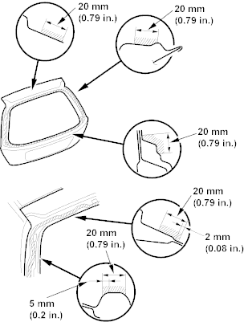
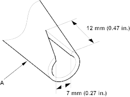
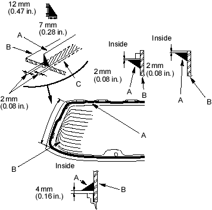

- With a sponge, apply a light coat of body primer to the original adhesive remaining around the rear window opening flange. Let the body primer dry for at least 10 minutes:
- Do not apply glass primer to the body and be careful not to mix up glass and body primer sponges.
- Never touch the primed surfaces with your hands.
Cross hatched area: Apply body primer here.

- Before filling a cartridge, cut a ''V'' in the end of the nozzle (A) as shown.

- Pack adhesive into the cartridge without air pockets to ensure continuous delivery. Put the cartridge in a caulking gun and run a bead of adhesive (A) around the edge of the rear window (B) as shown.
With the glass primer (C) you applied in step 15 as a guide, apply the adhesive to both side portions of the rear window.
Apply the adhesive within 30 minutes after applying the glass primer. Make a slightly thicker bead at each corner.
